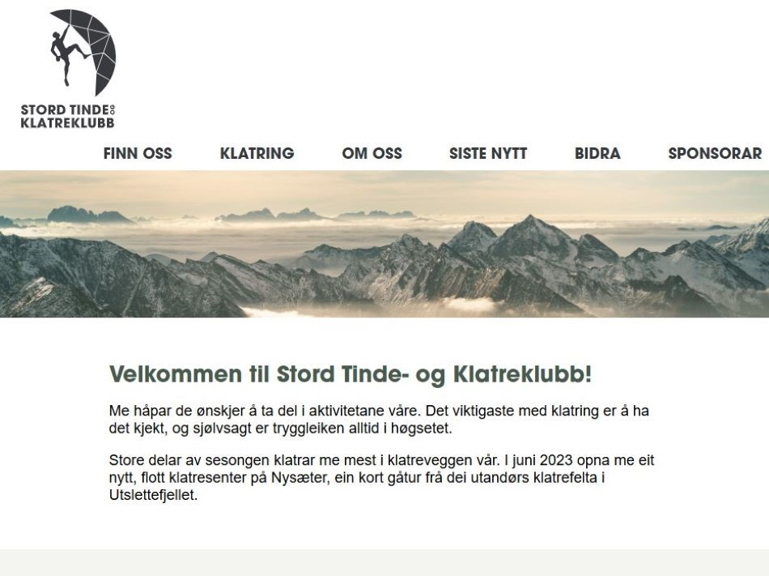
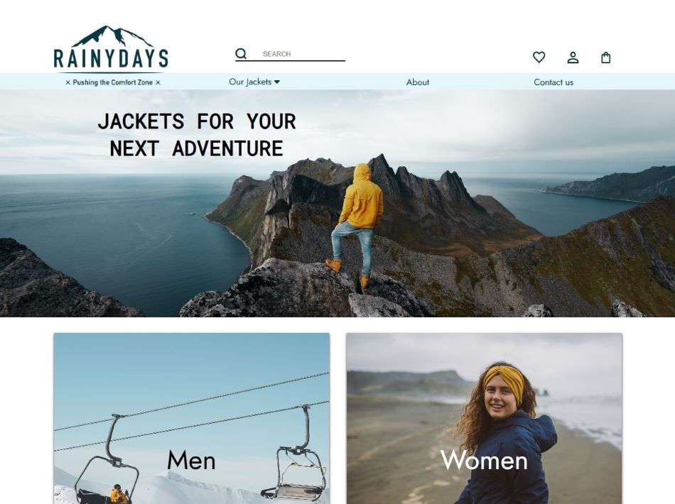
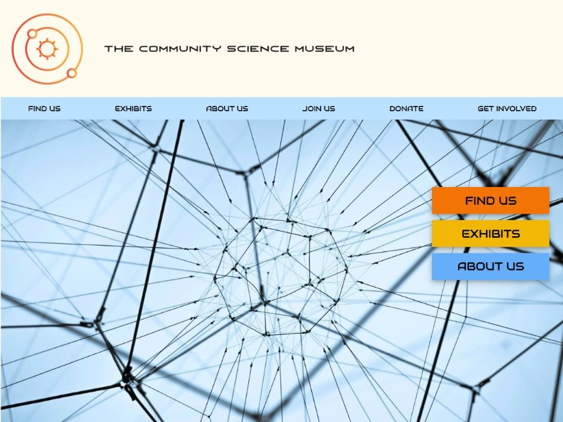

STOKK
Prototype for a new site for my local climbing club, using WordPress for content
creation, and a "headless CMS" for the website itself. The newest blog posts that are created in
WordPress are shown in the carousel on the home page, and on the 'Latest news' page. The contents of
specific pages created in WordPress are fetched and shown on the site.
GitHub repository
Live site

Rainydays
Rainydays, an online shop selling men's and women's rain jackets, used across several
courses.
GitHub repository
Live site

Science Museum
Semester project. Core target audience: Primary and middle school children (ages
7-15) and families with young children. The website is meant to be informative and engaging, encouraging
viewers to visit the museum. Also, the website should be responsive and easy to use on various devices.
GitHub repository
Live site